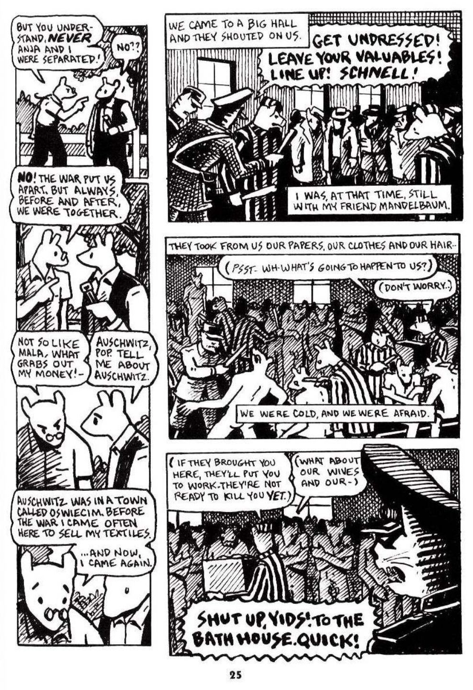

Do this, for each of the 4 questions:
1. Read Read the pages listed (the reader is on the left; on a phone it's above the questions).
2. Check Get the reading check right. If you miss, the choices mix up and you can try again in a few seconds.
3. Write Write 1–2 sentences using the sentence starter.
Done means 4 green checks and 4 answers. Then press Turn in answers at the bottom. No videos are needed.
Content note: This book shows camp violence and death, including the gas chambers. Ask your teacher for help if you need it.

Read each page. Click the page to make it bigger. Open all pages as a PDF ↗
Turn in your work
Your work saves on this device, so you can come back later. Your teacher sees it after you turn it in.